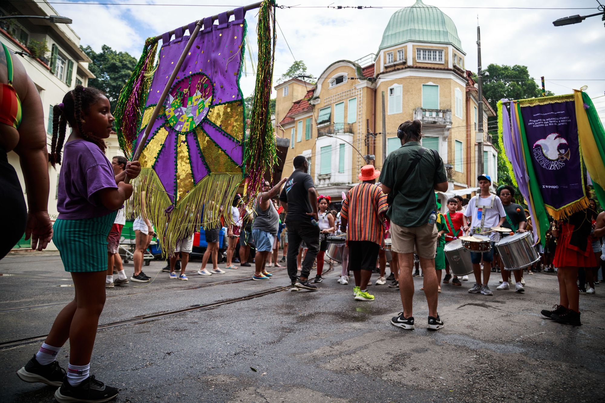

Oficinas em escolas municipais
Aulas semanais de música em 6 escolas da rede municipal do Rio, dentro do horário escolar, para crianças que de outra forma não teriam acesso a um instrumento.
Lei Rouanet · Artigo 18 · PRONAC 254750
A Favela Brass ensina jovens da favela e de escolas públicas do Rio de Janeiro a tocar instrumentos de sopro e percussão desde 2014. O plano anual de 2026 está aprovado na Lei Federal de Incentivo à Cultura, com 100% de dedução fiscal para o patrocinador, e a captação está aberta até 31 de dezembro de 2026.
A Favela Brass em números · dados de julho de 2026
O Plano Anual de Atividades Favela Brass 2026 (PRONAC 254750) foi aprovado pelo Ministério da Cultura com orçamento de R$ 2.360.695,53 e parecer técnico favorável. Ele financia um ano inteiro de educação musical gratuita no Rio de Janeiro.
Aulas semanais de música em 6 escolas da rede municipal do Rio, dentro do horário escolar, para crianças que de outra forma não teriam acesso a um instrumento.
Duas oficinas semanais de sopro e percussão no contraturno da escola parceira, aprofundando o trabalho iniciado em sala.
Cinco oficinas semanais na comunidade onde o projeto nasceu: aulas individuais, teoria musical e ensaios de banda, no caminho da profissionalização.
30 apresentações públicas (incluindo o Baile Brass), 3 eventos com parceiros, 6 apresentações didáticas e 14 encerramentos escolares.
Material de ensino publicado no site e no YouTube, disponível para qualquer pessoa que queira aprender música.
Currículo estruturado em 8 níveis, com avaliação externa e instrumentos emprestados para estudo em casa.
vagas de educação musical gratuita em 2026, da primeira nota na escola municipal ao palco profissional. A execução é proporcional à captação: cada real captado vira atividade dentro do próprio ano.

A PRIO é a patrocinadora âncora de 2026. O restante do orçamento aprovado está aberto para novos patrocinadores até o fim do ano.
Dados de julho de 2026 · fonte: SALIC / Ministério da Cultura
O projeto está enquadrado no Artigo 18 da Lei Rouanet, a modalidade com o benefício fiscal mais direto que existe: o valor aportado é deduzido integralmente do Imposto de Renda devido.
Empresas tributadas pelo lucro real podem destinar até 4% do IR devido. Em termos práticos, o patrocínio sai do imposto que a empresa já pagaria de qualquer forma.
Pessoas físicas também podem apoiar: até 6% do imposto devido na declaração completa, com a mesma dedução de 100%. O depósito vai direto para a conta de captação do projeto, aberta e monitorada pelo Ministério da Cultura, e toda a execução passa por prestação de contas ao governo federal. Se você é pessoa física, veja o passo a passo aqui.
Artigo 18 da Lei 8.313/91. Limite de 4% do imposto devido para pessoas jurídicas (lucro real) e 6% para pessoas físicas (declaração completa).
Sem valor mínimo. Nossa equipe ajuda a dimensionar a cota dentro do limite fiscal da sua empresa.
A Favela Brass prepara o contrato de patrocínio e toda a documentação do incentivo.
O aporte é feito na conta de captação oficial do projeto até 31 de dezembro de 2026.
Você recebe o recibo de mecenato e deduz 100% do valor no Imposto de Renda.
Contrapartidas pensadas para equipes de marketing, comunicação e ESG. Tudo documentado em contrato.
Sua marca nos materiais gráficos, no site, nas redes sociais e nos eventos do projeto ao longo de todo o ano.
São 53 apresentações previstas em 2026, em espaços públicos e culturais do Rio, cada uma com agradecimento público aos patrocinadores.
Números de atendimento, fotos e resultados, prontos para os seus relatórios internos e de sustentabilidade.
Convites para o Baile Brass e para as principais apresentações do ano, para a sua equipe e convidados.
A banda se apresenta em eventos da sua empresa: fim de ano, lançamentos e datas internas.
Fotos e vídeos do projeto para a comunicação da sua marca, com autorização de imagem assinada pelas famílias de todos os alunos.

Doze anos de trabalho contínuo, resultados medidos por avaliação externa e reconhecimento da mídia nacional e internacional.
GloboNews, julho de 2026: matéria de 11 minutos de Aline Midlej sobre a Favela Brass.
Captação via Lei Rouanet, ano a ano
A captação cresce todos os anos desde 2023. Em julho, 2026 já é o melhor ano da história do projeto, com seis meses de captação pela frente.
A PRIO é a patrocinadora âncora do plano anual 2026, com R$ 1 milhão aportado via Lei Rouanet. O apoio da PRIO sustenta o programa desde as oficinas nas escolas municipais até o curso avançado na Pereira da Silva. Sua empresa pode entrar ao lado dela.
Uma conversa de 20 minutos é suficiente para entender se o projeto faz sentido para a sua empresa. Fale direto com o fundador, sem intermediários.
Tom Ashe, Diretor Executivo · (21) 99109-4882
Associação Musical Favela Brass · CNPJ 37.332.605/0001-90 · Rua Pau da Bandeira, 19B, Laranjeiras, Rio de Janeiro, CEP 22221-140